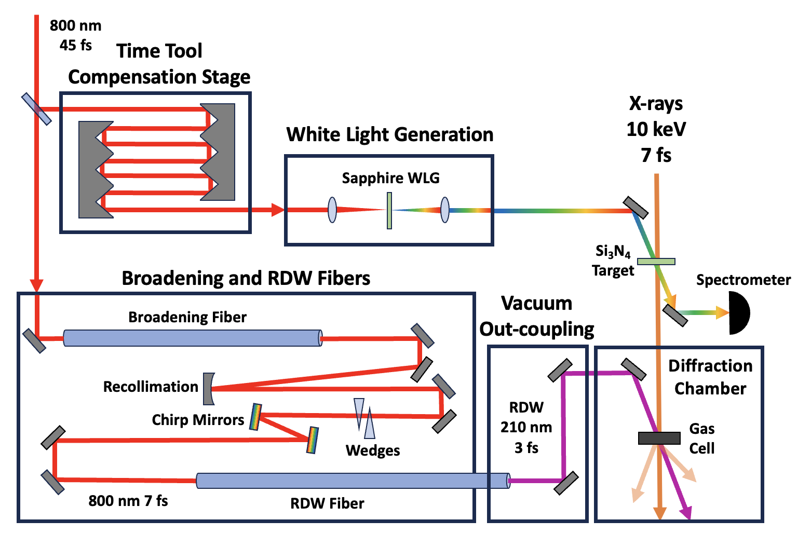

Experimental Layout

- 800 nm / 45 fs drive → time-tool compensation stage → sapphire white-light generation seeds the broadening and RDW fibres
- Broadening fibre + chirp mirrors + wedges compress the pulse before the RDW fibre emits a 210 nm, ~3 fs deep-UV pulse
- RDW pump and 10 keV / ~7 fs X-rays cross in the gas cell; scattering is recorded in the diffraction chamber, with the spectrometer monitoring the pulse